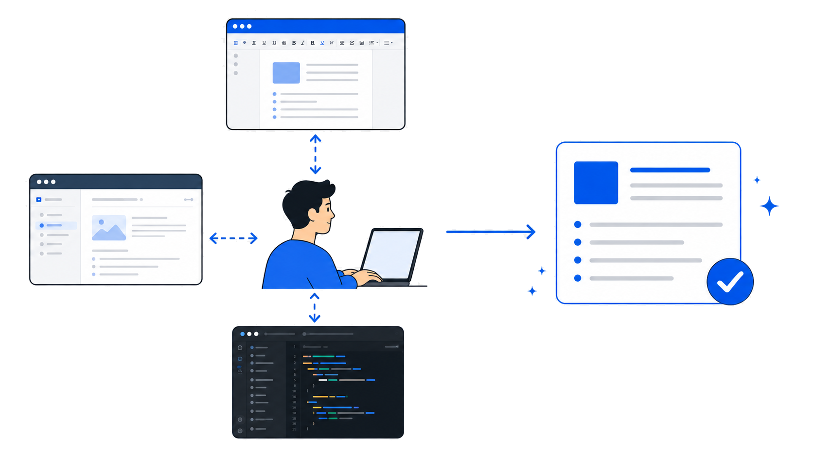

Prompt-Level Denial
Risk reduction through instruction, without tool-call elimination.
From Chat Q&A to Executable Analysis Loops
Agent workflow seminar
PART 01
Limits of answer-only workflows
From manual orchestration to controlled tool-call evidence


No APK, source, or report artifact changes.
No command, test, ADB, or Frida evidence.
Manifest, build variant, and device state as external inputs.
Manifest, decompiled code, device state, and logs come from outside the model.
sequenceDiagram autonumber participant U as User participant A as App participant M as Model participant T as Android Tool / MCP U->>A: Prompt A->>M: Prompt + tool schemas M-->>A: Tool call(name, args) A->>T: Execute jadx / adb / parser T-->>A: Structured result A->>M: Tool result Note over A,M: App executes. Model interprets. M-->>A: Final answer A-->>U: Response
Same security question, different execution path
Answer-only AI response, followed by human-led code review.
Target artifact plus request, then controlled tool execution.
What the user has to do when the model only answers
Security question without application state.
General checklist such as OWASP Top 10.
Manual navigation across codebase and manifests.
User-side vulnerability pattern matching.
Human-written evidence and result cleanup.
Target input, tool execution, and comprehensive response
flowchart LR Target["Target + request
app.apk + security task"]:::input --> AI["AI
tool-call planning"]:::ai AI --> Tools["Controlled tools
file · code · web · dependency"]:::tool Tools --> Evidence["Evidence bundle
paths · versions · findings · links"]:::evidence Evidence --> Response["Comprehensive response
summary · impact · repro · remediation"]:::success classDef input fill:#0f172a,stroke:#64748b,color:#e2e8f0,stroke-width:1.6px; classDef ai fill:#1d4ed8,stroke:#bfdbfe,color:#ffffff,stroke-width:2.4px; classDef tool fill:#0f766e,stroke:#99f6e4,color:#ffffff,stroke-width:2.2px; classDef evidence fill:#422006,stroke:#fbbf24,color:#fffbeb,stroke-width:2px; classDef success fill:#064e3b,stroke:#5eead4,color:#ecfeff,stroke-width:2.2px;
Tool calls convert one request into parallel evidence sources
APK structure, manifest parsing, resource extraction.
Sensitive function search, pattern detection, flow tracing.
CVE references, security advisories, recent exploit context.
Library inventory, version checks, known vulnerability lookup.
Device checks, dynamic probes, custom harness functions.
The value is not a longer answer, but a verifiable analysis path
PART 02
Standard connector for AI tools
flowchart TB Model(["AI Model: tool-call decision"]):::model --> Host["Host App: context + policy"]:::host Host --> C1["IDE / Coding Client"]:::client Host --> C2["Mobile Audit Harness"]:::client Host --> C3["Reverse Engineering UI"]:::client C1 --> S1[["Repo / Manifest Server"]]:::server C2 --> S2[["JADX / APK Server"]]:::server C2 --> S3[["Frida / Device Server"]]:::server C3 --> S4[["Ghidra / IDA Server"]]:::server S1 --> Cap["Tools / Resources / Findings"]:::cap S2 --> Cap S3 --> Cap S4 --> Cap classDef model fill:#1d4ed8,stroke:#bfdbfe,color:#ffffff,stroke-width:2.6px; classDef host fill:#0f172a,stroke:#60a5fa,color:#dbeafe,stroke-width:2px; classDef client fill:#164e63,stroke:#67e8f9,color:#ecfeff,stroke-width:2px; classDef server fill:#0f766e,stroke:#99f6e4,color:#ffffff,stroke-width:2.4px; classDef cap fill:#052e2b,stroke:#5eead4,color:#ecfeff,stroke-width:2px;
flowchart TB
subgraph ABefore["Before: custom wiring"]
BA["IDE Agent"]:::app --> B1["rg wrapper"]:::wire --> BT1["AndroidManifest.xml"]:::external
BA --> B2["jadx script"]:::wire --> BT2["Decompiled code"]:::external
BB["Audit UI"]:::app --> B3["frida script"]:::wire --> BT3["Device runtime"]:::external
BB --> B4["Ghidra bridge"]:::wire --> BT4["Native libs"]:::external
end
subgraph BAfter["After: MCP standard"]
HA["IDE Agent"]:::client --> HC1["MCP Client"]:::bridge
HB["Audit Harness"]:::client --> HC2["MCP Client"]:::bridge
HC1 --> HS1[["Manifest / Source Server"]]:::server
HC1 --> HS2[["JADX Server"]]:::server
HC2 --> HS1
HC2 --> HS3[["Frida / ADB Server"]]:::server
HC2 --> HS4[["Ghidra / IDA Server"]]:::server
HS1 --> HT1["APK / source"]:::external
HS2 --> HT2["DEX view"]:::external
HS3 --> HT3["Device evidence"]:::external
HS4 --> HT4["Native analysis"]:::external
end
classDef app fill:#111827,stroke:#fca5a5,color:#fee2e2,stroke-width:1.8px;
classDef wire fill:#3f1d1d,stroke:#fb7185,color:#ffe4e6,stroke-width:2px;
classDef client fill:#0f172a,stroke:#60a5fa,color:#dbeafe,stroke-width:1.8px;
classDef bridge fill:#164e63,stroke:#67e8f9,color:#ecfeff,stroke-width:2px;
classDef server fill:#0f766e,stroke:#99f6e4,color:#ffffff,stroke-width:2.4px;
classDef external fill:#1f2937,stroke:#94a3b8,color:#f8fafc,stroke-width:1.5px;
read · list · search · parse within allowed roots
flowchart TB Request["Request: exported components"]:::input --> Host["Host / MCP Client
model selects tool"]:::host Host --> Server[["Filesystem MCP Server"]]:::server Server --> Verify["allowed roots check
read / list / search / parse
manifest / source / JSON
evidence review"]:::success classDef input fill:#111827,stroke:#94a3b8,color:#f8fafc,stroke-width:1.5px; classDef host fill:#0f172a,stroke:#60a5fa,color:#dbeafe,stroke-width:2px; classDef model fill:#1d4ed8,stroke:#bfdbfe,color:#ffffff,stroke-width:2.5px; classDef client fill:#164e63,stroke:#67e8f9,color:#ecfeff,stroke-width:2px; classDef server fill:#0f766e,stroke:#99f6e4,color:#ffffff,stroke-width:2.4px; classDef guard fill:#422006,stroke:#fbbf24,color:#fffbeb,stroke-width:2px; classDef deny fill:#3f1d1d,stroke:#fca5a5,color:#fee2e2,stroke-width:2px; classDef tool fill:#052e2b,stroke:#5eead4,color:#ecfeff,stroke-width:2px; classDef success fill:#064e3b,stroke:#5eead4,color:#ecfeff,stroke-width:2px;
Connection layer, not execution loop.
flowchart LR Ask["Find exported
Activities in this repo"]:::ask --> Model["AI"]:::model Model --> Tools["MCP tools"]:::tool Tools --> T1["list files"]:::step Tools --> T2["read manifest"]:::step Tools --> T3["rg source"]:::step Tools --> T4["parse XML"]:::step T1 --> Evidence["evidence summary"]:::success T2 --> Evidence T3 --> Evidence T4 --> Evidence classDef ask fill:#0f172a,stroke:#67e8f9,color:#ecfeff,stroke-width:2px; classDef model fill:#1d4ed8,stroke:#bfdbfe,color:#ffffff,stroke-width:2.4px; classDef tool fill:#0f766e,stroke:#99f6e4,color:#ffffff,stroke-width:2.3px; classDef step fill:#111827,stroke:#60a5fa,color:#dbeafe,stroke-width:1.8px; classDef success fill:#064e3b,stroke:#5eead4,color:#ecfeff,stroke-width:2px;
protected files, device permissions, false-positive criteria
manifest → source hit → permission → evidence → report
read_file, rg, manifest parser, jadx, adb, Frida
component, risk, evidence, caveat, validation command
Packaged prompt patterns as managed Skills
PART 03
Reusable audit procedure packaging
my-skill/ ├── SKILL.md # metadata + instructions ├── scripts/ # optional executable code ├── references/ # policies, API specs, checklists └── assets/ # templates, examples, static files
Executable capability: read, jadx, adb, frida
Standard protocol for external tools and data
Reusable workflow for tool order and judgment criteria
flowchart TB
Catalog["name + description"]:::catalog --> Match{"task matches?"}:::decision
Match -->|no| Skip["do not load"]:::muted
Match -->|yes| Skill["read SKILL.md"]:::skill
Skill --> Refs["references/"]:::file
Skill --> Scripts["scripts/"]:::file
Skill --> Assets["assets/"]:::file
Skill --> Tools["use tools / MCP / shell"]:::tool
Tools --> Evidence["evidence report"]:::success
classDef catalog fill:#0f172a,stroke:#67e8f9,color:#ecfeff,stroke-width:2px;
classDef decision fill:#422006,stroke:#fbbf24,color:#fffbeb,stroke-width:2px;
classDef muted fill:#1f2937,stroke:#64748b,color:#cbd5e1,stroke-width:1.5px;
classDef skill fill:#0f766e,stroke:#99f6e4,color:#ffffff,stroke-width:2.5px;
classDef file fill:#111827,stroke:#60a5fa,color:#dbeafe,stroke-width:1.8px;
classDef tool fill:#1e3a8a,stroke:#93c5fd,color:#eff6ff,stroke-width:2px;
classDef success fill:#064e3b,stroke:#5eead4,color:#ecfeff,stroke-width:2px;
manifest, storage, network, crypto, logs
bridge, file access, mixed content, allowlist
exported, permission, intent-filter, deep link
--- name: android-open-components description: Use when auditing exported Android components, deep links, and missing permissions. --- Goal: Find externally reachable Android components. Inputs: merged-manifest.json, jadx source map, references/android-component-policy.md Procedure: 1. Parse manifest into structured component records. 2. Join each component with source and permission context. 3. Ask the model to judge risk, not to rediscover facts. Output: component table, evidence, risk, validation command.
PART 04
Execution loop over MCP tools and Skill procedures
flowchart TB Task["User task"]:::input --> Skill["Skill
procedure · cautions · output schema"]:::skill Skill --> Plan((Plan)):::core Plan --> Act((Act)):::core Tools[["MCP tools
read · rg · parser · adb · frida"]]:::tool --> Act Act --> Evidence["Tool result / evidence"]:::evidence Evidence --> Observe((Observe)):::core Observe -->|failed| Revise((Revise)):::warn Revise --> Plan Observe -->|verified| Done["Evidence report"]:::success classDef input fill:#0f172a,stroke:#64748b,color:#e2e8f0,stroke-width:1.5px; classDef skill fill:#0f766e,stroke:#99f6e4,color:#ffffff,stroke-width:2.4px; classDef tool fill:#164e63,stroke:#67e8f9,color:#ecfeff,stroke-width:2px; classDef evidence fill:#422006,stroke:#fbbf24,color:#fffbeb,stroke-width:2px; classDef core fill:#1e3a8a,stroke:#93c5fd,color:#eff6ff,stroke-width:2.4px; classDef warn fill:#78350f,stroke:#fbbf24,color:#fffbeb,stroke-width:2px; classDef success fill:#064e3b,stroke:#5eead4,color:#ecfeff,stroke-width:2px;
flowchart TB Model["Model"]:::core --> Agent["Agent loop"]:::agent Context["Android app context"]:::input --> Agent Tools["MCP tools / Shell / ADB / Frida"]:::tool --> Agent Skill["Skill procedure"]:::skill --> Agent Verify["Verification evidence"]:::verify --> Agent Agent --> Work["Executable analysis loop"]:::success classDef input fill:#0f172a,stroke:#64748b,color:#e2e8f0,stroke-width:1.5px; classDef core fill:#1d4ed8,stroke:#bfdbfe,color:#ffffff,stroke-width:2.4px; classDef tool fill:#0f766e,stroke:#99f6e4,color:#ffffff,stroke-width:2px; classDef skill fill:#164e63,stroke:#67e8f9,color:#ecfeff,stroke-width:2px; classDef verify fill:#422006,stroke:#fbbf24,color:#fffbeb,stroke-width:2px; classDef agent fill:#881337,stroke:#fda4af,color:#fff1f2,stroke-width:2.4px; classDef success fill:#064e3b,stroke:#5eead4,color:#ecfeff,stroke-width:2px;
flowchart TB LLM[LLM]:::core --> Tools[Tool layer]:::tool Tools --> Loop[Planning / Action / Observe / Retry]:::loop Loop --> Context[Context management]:::context Context --> Verify[Execution and verification]:::success Verify --> Loop classDef core fill:#1d4ed8,stroke:#bfdbfe,color:#ffffff,stroke-width:2.5px; classDef tool fill:#111827,stroke:#60a5fa,color:#dbeafe,stroke-width:1.8px; classDef loop fill:#0f766e,stroke:#99f6e4,color:#ffffff,stroke-width:2.3px; classDef context fill:#422006,stroke:#fbbf24,color:#fffbeb,stroke-width:2px; classDef success fill:#064e3b,stroke:#5eead4,color:#ecfeff,stroke-width:2px;
exported, permission, intent-filter
rg, fd, grep, jadx output
merged manifest, XML, call graph
./gradlew test adb shell pm dump aapt dump xmltree app.apk AndroidManifest.xml jadx --show-bad-code app.apk frida -U -f com.example.app semgrep --config android-audit.yml
LLM ├─ manifest parser / rg / structured extractor ├─ jadx / apktool / aapt: APK and DEX static analysis ├─ adb / Frida / objection: device and runtime checks ├─ Semgrep / androguard: rule-based code audit └─ Ghidra / IDA Pro: native library analysis
flowchart TB
Ask["Find open components"]:::run --> Find[find AndroidManifest]:::step
Find --> Grep[rg exported / intent-filter]:::step
Grep --> Guess[AI interprets candidates]:::warn
Guess --> Miss{missing risk?}:::decision
Miss -->|possible| Extract[structured manifest JSON]:::step
Extract --> Judge[AI judges risk]:::run
Judge --> Report[Report evidence]:::success
classDef run fill:#1e3a8a,stroke:#93c5fd,color:#eff6ff,stroke-width:2px;
classDef warn fill:#7f1d1d,stroke:#fca5a5,color:#fee2e2,stroke-width:2px;
classDef step fill:#111827,stroke:#60a5fa,color:#dbeafe,stroke-width:1.8px;
classDef decision fill:#422006,stroke:#fbbf24,color:#fffbeb,stroke-width:2px;
classDef success fill:#064e3b,stroke:#5eead4,color:#ecfeff,stroke-width:2px;
Goal: exported Android component risk review Scope: app module merged manifest + decompiled code Constraint: analysis report only, no source edits Verification: manifest extractor JSON vs aapt output Report: component, export reason, permission, evidence, risk
Finding: LoginDeepLinkActivity is exported by intent-filter. Evidence: - merged-manifest.json: exported=true - AndroidManifest.xml: intent-filter VIEW/BROWSABLE - source: reads token from deep link parameter Risk: - external app can trigger login flow Residual risk: - dynamic validation on device is still required
PART 05
High-accuracy mobile security audits with smaller token budgets
Probabilistic prompt guard vs deterministic runtime hook
Risk reduction through instruction, without tool-call elimination.
Harness interception with allowlist, permission, path, target app, log, and stop-condition checks.
Completion target
manifest, API level, policy
Allowed change scope
Judgment proof
flowchart TB Request["User request"]:::input --> Spec["Audit spec"]:::core Spec --> Facts["structured Android facts"]:::step Spec --> Context["selected policy context"]:::step Facts --> Judge["AI risk judgment
+ evidence-backed finding"]:::success Context --> Judge Facts -.-> Noise["less source text"]:::benefit Context -.-> Accuracy["fewer wrong assumptions"]:::benefit classDef input fill:#0f172a,stroke:#64748b,color:#e2e8f0,stroke-width:1.5px; classDef core fill:#0f766e,stroke:#99f6e4,color:#ffffff,stroke-width:2.5px; classDef step fill:#111827,stroke:#60a5fa,color:#dbeafe,stroke-width:1.8px; classDef success fill:#064e3b,stroke:#5eead4,color:#ecfeff,stroke-width:2px; classDef benefit fill:#422006,stroke:#fbbf24,color:#fffbeb,stroke-width:1.8px;
flowchart TB Work["Human audit task"]:::input --> Spec["Audit spec"]:::core Spec --> Harness["Harness
deterministic collection"]:::tool Harness --> AI["AI judgment
analysis · PoC · diagnosis"]:::loop AI --> Evidence["Evidence report"]:::success Evidence --> Human["Human follow-up"]:::human Spec --> Guard[Tool and device policy]:::guard Guard --> Harness classDef input fill:#0f172a,stroke:#64748b,color:#e2e8f0,stroke-width:1.5px; classDef core fill:#0f766e,stroke:#99f6e4,color:#ffffff,stroke-width:2.5px; classDef tool fill:#111827,stroke:#5eead4,color:#ccfbf1,stroke-width:1.8px; classDef loop fill:#1d4ed8,stroke:#bfdbfe,color:#ffffff,stroke-width:2.4px; classDef guard fill:#422006,stroke:#fbbf24,color:#fffbeb,stroke-width:2px; classDef human fill:#111827,stroke:#94a3b8,color:#f8fafc,stroke-width:1.8px; classDef success fill:#064e3b,stroke:#5eead4,color:#ecfeff,stroke-width:2px;
Text-based repetition with miss risk, latency, and extra cost.
Harness-generated facts, AI-focused vulnerability judgment.
Fixed APK / source
Same parser and commands
API level and device state
Execution evidence and JSON
flowchart TB
Verify{Verification result}:::decision
Verify -->|pass| Done[Done: report evidence]:::success
Verify -->|known failure| Revise[Revise within scope]:::step
Verify -->|unclear| Ask[Ask user to choose]:::ask
Verify -->|budget exceeded| Stop[Stop with findings]:::stop
Revise --> Verify
classDef decision fill:#422006,stroke:#fbbf24,color:#fffbeb,stroke-width:2.2px;
classDef step fill:#111827,stroke:#60a5fa,color:#dbeafe,stroke-width:1.8px;
classDef ask fill:#164e63,stroke:#67e8f9,color:#ecfeff,stroke-width:2px;
classDef stop fill:#3f1d1d,stroke:#fca5a5,color:#fee2e2,stroke-width:2px;
classDef success fill:#064e3b,stroke:#5eead4,color:#ecfeff,stroke-width:2px;
No target APK, build variant, permission baseline, or validation method.
Early audit category selection: open components, WebView, storage, crypto.
Candidate finding inventory
manifest / jadx scan
allowlist / bridge checks
ADB / Frida evidence report
Request: WebView vulnerability review Harness transformation: 1. Candidates: JS bridge exposure, file access, mixed content, allowlist bypass 2. Static checks: AndroidManifest, WebView settings, addJavascriptInterface hits 3. Dynamic checks: ADB Activity launch, Frida bridge-call observation 4. Tools: jadx / adb / Frida MCP for code, device, runtime evidence 5. Exit: reproducible evidence or unverifiable-state rationale
PART 06
LLM exploration over reproducible APK analysis artifacts
flowchart TD A["APK upload / analysis request"]:::input --> B["job.json creation
artifacts/{jobId} workspace"]:::setup B --> C["Local APK analysis
Manifest · JADX · Semgrep · XML report"]:::local C --> D["LLM Task Queue"]:::queue D --> X["LLM invocation layer
CodexCliAdapter · codex exec"]:::llm X --> F["Per-finding LLM follow-up"]:::finding F --> R["Report / Scenario / Autonomous review
summary · scenario review · ASR"]:::review R --> Z["Final artifacts
XML report + follow-up + summary + scenario + ASR"]:::output classDef input fill:#0f172a,stroke:#64748b,color:#e2e8f0,stroke-width:1.5px; classDef setup fill:#111827,stroke:#94a3b8,color:#f8fafc,stroke-width:1.6px; classDef local fill:#0f766e,stroke:#99f6e4,color:#ffffff,stroke-width:2.2px; classDef queue fill:#422006,stroke:#fbbf24,color:#fffbeb,stroke-width:2px; classDef llm fill:#1d4ed8,stroke:#bfdbfe,color:#ffffff,stroke-width:2.4px; classDef finding fill:#881337,stroke:#fda4af,color:#fff1f2,stroke-width:2.2px; classDef review fill:#312e81,stroke:#c4b5fd,color:#ffffff,stroke-width:2.4px; classDef output fill:#064e3b,stroke:#5eead4,color:#ecfeff,stroke-width:2.2px;
flowchart TD A["LLM task request
finding follow-up / report audit / scenario / ASR"]:::input --> B["LlmInvocationSpec creation"]:::spec B --> C["LLM Runtime Abstraction
LlmRuntimePort"]:::port C --> D{"Provider selection
APK_ANALYSIS_LLM_PROVIDER"}:::decision D -->|codex| E["CodexCliAdapter"]:::codex D -->|api_harness| H["HarnessRuntimeAdapter"]:::harness subgraph CODEX["Codex path"] E --> E1["prompt + context files"]:::step E1 --> E2["codex exec --json --ephemeral"]:::run E2 --> E3["output.json creation"]:::artifact E2 --> E4["llm-cli-exec.txt / metrics storage"]:::artifact end subgraph HARNESS["API Harness path"] H --> H1["harness-request.json creation"]:::step H1 --> H2["llm_harness CLI execution
run-spec"]:::run H2 --> H3["OpenAI-compatible API call"]:::api H3 --> H4["tool loop
rg / read_file / list_dir / lookup"]:::tool H4 --> H5["strict JSON output"]:::json H5 --> H6["output.json creation"]:::artifact H5 --> H7["tool-trace.jsonl / metadata storage"]:::artifact end classDef input fill:#0f172a,stroke:#64748b,color:#e2e8f0,stroke-width:1.5px; classDef spec fill:#422006,stroke:#fbbf24,color:#fffbeb,stroke-width:2px; classDef port fill:#312e81,stroke:#c4b5fd,color:#ffffff,stroke-width:2.2px; classDef decision fill:#111827,stroke:#fca5a5,color:#fee2e2,stroke-width:2.2px; classDef codex fill:#1d4ed8,stroke:#bfdbfe,color:#ffffff,stroke-width:2.4px; classDef harness fill:#0f766e,stroke:#99f6e4,color:#ffffff,stroke-width:2.4px; classDef step fill:#111827,stroke:#94a3b8,color:#f8fafc,stroke-width:1.6px; classDef run fill:#111827,stroke:#60a5fa,color:#dbeafe,stroke-width:1.8px; classDef api fill:#1e3a8a,stroke:#93c5fd,color:#eff6ff,stroke-width:2px; classDef tool fill:#881337,stroke:#fda4af,color:#fff1f2,stroke-width:2px; classDef json fill:#0f766e,stroke:#99f6e4,color:#ffffff,stroke-width:2px; classDef artifact fill:#064e3b,stroke:#5eead4,color:#ecfeff,stroke-width:2.2px;
flowchart TD E["Per-finding LLM follow-up task"]:::start --> F1["finding-1
context.json"]:::ctx E --> F2["finding-2
context.json"]:::ctx E --> F3["finding-N
context.json"]:::ctx F1 --> X["LLM invocation layer"]:::llm F2 --> X F3 --> X X --> G["Per-finding summary / report storage
raw/finding_follow_up/..."]:::store G --> H0["Report-Level Analysis start"]:::next classDef start fill:#422006,stroke:#fbbf24,color:#fffbeb,stroke-width:2px; classDef ctx fill:#111827,stroke:#60a5fa,color:#dbeafe,stroke-width:1.8px; classDef llm fill:#1d4ed8,stroke:#bfdbfe,color:#ffffff,stroke-width:2.4px; classDef store fill:#0f766e,stroke:#99f6e4,color:#ffffff,stroke-width:2.2px; classDef next fill:#064e3b,stroke:#5eead4,color:#ecfeff,stroke-width:2.2px;
flowchart TD H0["Report-Level Analysis start"]:::start --> H1["findings + follow-up integration"]:::step H1 --> H2["evidence preview / summary context"]:::step H2 --> H3["Report-level LLM audit call
context.json + output schema"]:::llm H3 --> H4["executive summary + priority"]:::judge H4 --> H5["report summary + XML update"]:::done classDef start fill:#422006,stroke:#fbbf24,color:#fffbeb,stroke-width:2px; classDef step fill:#111827,stroke:#5eead4,color:#ccfbf1,stroke-width:1.8px; classDef llm fill:#1d4ed8,stroke:#bfdbfe,color:#ffffff,stroke-width:2.4px; classDef judge fill:#312e81,stroke:#c4b5fd,color:#ffffff,stroke-width:2px; classDef done fill:#064e3b,stroke:#5eead4,color:#ecfeff,stroke-width:2.2px;
flowchart TD I["Autonomous Security Review start"]:::start --> I1["attack surface + candidate pool initialization"]:::pool I1 --> I2["iterative LLM analysis"]:::llm I2 --> I3["candidate merge / memory update"]:::merge I3 --> I4["final candidate validation + filtering"]:::filter I4 --> I5["autonomous-security-review generation"]:::done I5 --> Z["Final artifact update"]:::output I3 -.-> I2 classDef start fill:#422006,stroke:#fbbf24,color:#fffbeb,stroke-width:2px; classDef pool fill:#111827,stroke:#5eead4,color:#ccfbf1,stroke-width:1.8px; classDef llm fill:#1d4ed8,stroke:#bfdbfe,color:#ffffff,stroke-width:2.4px; classDef merge fill:#0f766e,stroke:#99f6e4,color:#ffffff,stroke-width:2px; classDef filter fill:#312e81,stroke:#c4b5fd,color:#ffffff,stroke-width:2px; classDef done fill:#064e3b,stroke:#5eead4,color:#ecfeff,stroke-width:2.2px; classDef output fill:#064e3b,stroke:#5eead4,color:#ecfeff,stroke-width:2.2px;
upload / CLI input + fingerprint pinning
decompile, manifest, network, certificate, Semgrep, SBOM
bounded tool loop + strict output schema
LLM follow-up, report exploration, and scenario review over artifacts
False-positive risk from path, line, or Android policy memory errors.
component, permission, source hit, certificate, Semgrep results as JSON/XML.
flowchart TB Task["Audit task"]:::input --> Harness["API Harness"]:::core Harness --> Model["LLM
plan next tool"]:::model Model --> Tools["Safe tools
rg · read_file · lookup"]:::tool Tools --> Ledger["Evidence ledger"]:::evidence Ledger --> Model Model --> Final["Strict schema output"]:::final Final --> Validate["Local validation
path · line · evidence"]:::success classDef input fill:#0f172a,stroke:#64748b,color:#e2e8f0,stroke-width:1.5px; classDef core fill:#881337,stroke:#fda4af,color:#fff1f2,stroke-width:2.5px; classDef model fill:#1d4ed8,stroke:#bfdbfe,color:#ffffff,stroke-width:2.2px; classDef tool fill:#111827,stroke:#fca5a5,color:#fee2e2,stroke-width:1.8px; classDef evidence fill:#422006,stroke:#fbbf24,color:#fffbeb,stroke-width:2px; classDef final fill:#312e81,stroke:#c4b5fd,color:#ffffff,stroke-width:2px; classDef success fill:#064e3b,stroke:#5eead4,color:#ecfeff,stroke-width:2px;
repo-local system permission protection level lookup
protected broadcast lookup
exported component and receiver false-positive reduction
reference-backed report evidence, not model memory
flowchart LR Static["Static scan
manifest · source · semgrep"]:::scan --> Candidate["Candidate pool"]:::candidate Candidate --> Skill["Finding skill
WebView · component · deeplink"]:::skill Skill --> Lookup["Reference lookup
permission · broadcast"]:::lookup Skill --> Dynamic["Validation plan
ADB · Frida · WebView"]:::dynamic Lookup --> Finding["Evidence-backed finding"]:::success Dynamic --> Finding Finding --> Reject["False positive filtering"]:::reject classDef scan fill:#111827,stroke:#60a5fa,color:#dbeafe,stroke-width:1.8px; classDef candidate fill:#422006,stroke:#fbbf24,color:#fffbeb,stroke-width:2px; classDef skill fill:#881337,stroke:#fda4af,color:#fff1f2,stroke-width:2.4px; classDef lookup fill:#0f766e,stroke:#99f6e4,color:#ffffff,stroke-width:2px; classDef dynamic fill:#1e3a8a,stroke:#93c5fd,color:#eff6ff,stroke-width:2px; classDef success fill:#064e3b,stroke:#5eead4,color:#ecfeff,stroke-width:2px; classDef reject fill:#3f1d1d,stroke:#fca5a5,color:#fee2e2,stroke-width:1.8px;
Activity, deeplink, broadcast, logcat evidence
runtime hook, method trace, WebView observability
DevTools, console probe, marker URL reachability
native entrypoint and JNI flow validation
Evidence-first dynamic validation with predefined functions
1. Static: addJavascriptInterface + setJavaScriptEnabled + loadUrl candidates 2. ADB: approved test marker URL via candidate Activity / deep link 3. Frida: WebView.setWebContentsDebuggingEnabled(true) 4. Hook: loadUrl / evaluateJavascript call and URL logging 5. DevTools: benign JavaScript execution check in console 6. Evidence: external URL load, JS enablement, bridge reachability, logcat / screenshot

Tool automation · AI triage · Human follow-up
BACKUP
BACKUP
AI-callable servers for analysis tools
jadx · apktool · aapt
adb · Frida · objection
Ghidra · IDA Pro
Tools execute, AI interprets results.
BACKUP
flowchart TD U["APK attachment
'Find issues in this app'"]:::input --> H["AI Host / MCP Client"]:::host H --> S["Static MCP tools"]:::static H --> D["Dynamic MCP tools"]:::dynamic S --> S1["apk decompile
JADX / apktool"]:::tool S --> S2["file read
manifest / source / config"]:::tool S --> S3["static tests
Semgrep / rules / parser"]:::tool S --> S4["Ghidra
native library analysis"]:::tool D --> D1["adb install"]:::tool D --> D2["adb shell / logcat"]:::tool D --> D3["dynamic tests
intent / deeplink / WebView"]:::tool S1 --> E["Evidence bundle"]:::evidence S2 --> E S3 --> E S4 --> E D1 --> E D2 --> E D3 --> E E --> F["AI triage
candidate findings + caveats"]:::success classDef input fill:#0f172a,stroke:#67e8f9,color:#ecfeff,stroke-width:2px; classDef host fill:#1d4ed8,stroke:#bfdbfe,color:#ffffff,stroke-width:2.4px; classDef static fill:#0f766e,stroke:#99f6e4,color:#ffffff,stroke-width:2.2px; classDef dynamic fill:#312e81,stroke:#c4b5fd,color:#ffffff,stroke-width:2.2px; classDef tool fill:#111827,stroke:#60a5fa,color:#dbeafe,stroke-width:1.8px; classDef evidence fill:#422006,stroke:#fbbf24,color:#fffbeb,stroke-width:2px; classDef success fill:#064e3b,stroke:#5eead4,color:#ecfeff,stroke-width:2.2px;
BACKUP
Reusable team audit workflow instead of repeated instruction paste.
BACKUP
repo · manifest exploration
plan · script · report
ReAct + MCP analysis
BACKUP
BACKUP
flowchart TB Work["Human work"]:::start --> Harness["Tool / Harness
collect · parse · run"]:::tool Harness --> AI["AI judgment
analysis · PoC
diagnosis"]:::step AI --> Evidence["Evidence report"]:::evidence Evidence --> Human["Human
final analysis · follow-up"]:::success classDef start fill:#1d4ed8,stroke:#bfdbfe,color:#ffffff,stroke-width:2.5px; classDef tool fill:#0f766e,stroke:#99f6e4,color:#ffffff,stroke-width:2.2px; classDef step fill:#111827,stroke:#60a5fa,color:#dbeafe,stroke-width:1.8px; classDef evidence fill:#422006,stroke:#fbbf24,color:#fffbeb,stroke-width:2px; classDef success fill:#064e3b,stroke:#5eead4,color:#ecfeff,stroke-width:2px;
BACKUP
security audit task decomposition
deterministic routine automation
Manifest, Gradle, API policy inputs
code analysis, PoC attempt, vulnerability diagnosis
success, failure, question, budget exceeded
final analysis, action, ticket, patch
BACKUP
flowchart TD S0["Scenario Review start"]:::start --> S1["current-app findings
report summary load"]:::step S1 --> S2["cross-app candidate lookup
package · component · deeplink · WebView · permission similarity"]:::db S2 --> S3["scenario context creation
current-app candidates + cross-app source"]:::context S3 --> S4["Scenario Review LLM call"]:::llm S4 --> S5["attack scenario candidate selection
validation plan / caveat"]:::judge S5 --> S6["scenario-review artifact storage"]:::done classDef start fill:#422006,stroke:#fbbf24,color:#fffbeb,stroke-width:2px; classDef step fill:#111827,stroke:#5eead4,color:#ccfbf1,stroke-width:1.8px; classDef db fill:#0f172a,stroke:#94a3b8,color:#f8fafc,stroke-width:1.8px; classDef context fill:#0f766e,stroke:#99f6e4,color:#ffffff,stroke-width:2px; classDef llm fill:#1d4ed8,stroke:#bfdbfe,color:#ffffff,stroke-width:2.4px; classDef judge fill:#312e81,stroke:#c4b5fd,color:#ffffff,stroke-width:2px; classDef done fill:#064e3b,stroke:#5eead4,color:#ecfeff,stroke-width:2.2px;
BACKUP
external skill file and script review before install
minimal allowed tools and MCP permissions
manual invocation for device execution, hook, report upload
tool-call and execution evidence retention